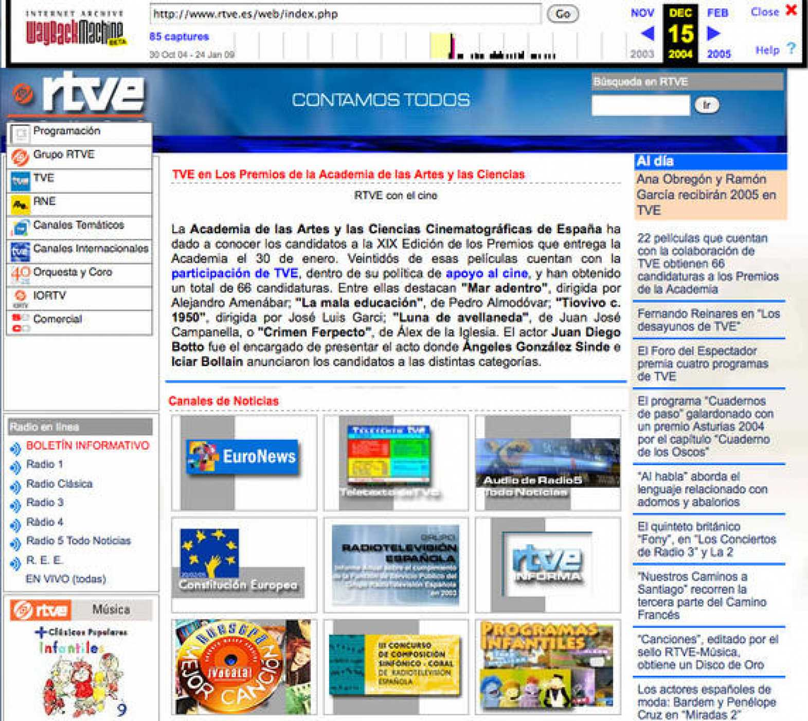

Un sitio web es parte fundamental de toda empresa con éxito. Pero ¿cómo debería diseñarse mejor? Todo depende de tu objetivo. ¿Quieres recoger solicitudes para un curso online o hacerte un nombre como fotógrafo? ¿Planeas vender joyas o quieres crear un blog? Dependiendo de tu respuesta, tu página web puede necesitar una apariencia completamente diferente.
Tanto si creas tu propio sitio web como si contratas a un proveedor de servicios, debes pensar de antemano qué tipo de sitio web necesitas. Al final, solo tú como empresario puedes tomar esta decisión estratégica. Con este resumen sobre tipos de páginas web resolveremos tus dudas.

El ecosistema web es amplio y diverso, tanto como alcancemos a imaginar. ¿Te has preguntado una vez cómo eran las páginas web hace 20 años? o ¿Cómo ver páginas web que ya no existen? En medio de un entorno digital que evoluciona tan rápido esa puede ser una experiencia tan interesante como útil para quienes vivimos en la era de la superinformación. Esta vista atrás puede ser útil por varios motivos: puedes encontrar inspiración en los diseños de webs antiguas, así como acceder a archivos que han dejado de estar disponibles. Aparte de asomarnos a páginas que ya no existen, esa mirada al pasado es una buena forma de estudiar socioculturalmente nuestras raíces digitales. ¿Piensas que no es posible ver páginas web eliminadas? La tecnología web no conoce límites, hoy te queremos presentar una herramienta que funcionan como una gran memoria del mundo digital: The Wayback Machine. Literalmente, Wayback Machine es como una máquina del tiempo. Así que si necesitas ver una página web antigua aquí tienes una opción efectiva, sencilla y gratuita.
Este es el video
Esta extraido de youtube
No es mi video